Lo que vas a hacer

En este proyecto, crearás una animación con objetos que corren y vuelan para tomar el autobús.
Vas a:
- Hacer que los objetos hagan cosas diferentes al presionar bandera verde ⚑
- Colocar los objetos en el Escenario
- Utilizar un bucle de repetición para mover los objetos y cambiar sus disfraces
ReproducirHaz clic en la bandera verde para ver la animación. ¿Qué objetos cambian sus disfraces para crear un efecto de animación? |
1. Crea tu escena de autobús
Abre el proyecto inicial
| Crea un proyecto nuevo en Scratch. Puedes usar directamente este enlace y Scratch se abrirá en otra pestaña del navegador. |
Cambia el nombre del proyecto y ponle "Toma el autobús":
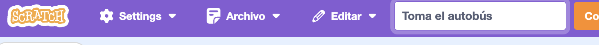
Elige un fondo
Ya sabes cómo cambiar el fondo de un proyecto de Scratch. Usa el botón de Elige un fondo y busca algún fondo que te guste y donde creas que va a quedar bien tu autobús. Puedes elegir el mismo fondo de los ejemplos o cualquier otro. Yo he utilizado un fondo que se llama "Night City With Street" y que queda así:
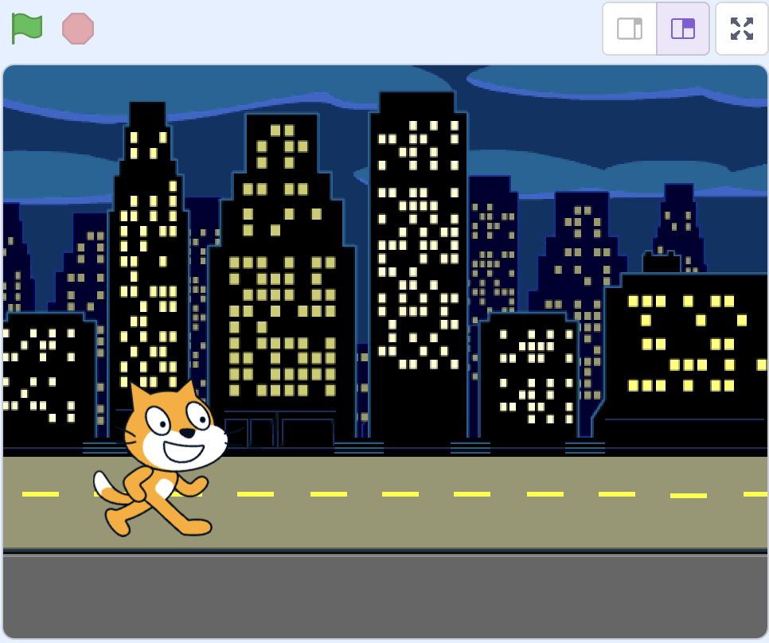
Coloca tu autobús
Elige el autobús
Haz clic en Elegir un objeto. Escribe "bus" en el cuadro de búsqueda en la parte superior para filtrar (1) y que te sea más fácil encontrar el objeto. Verás que sólo queda precisamente el objeto que queremos añadir: City Bus (2). Añádelo a tu proyecto:
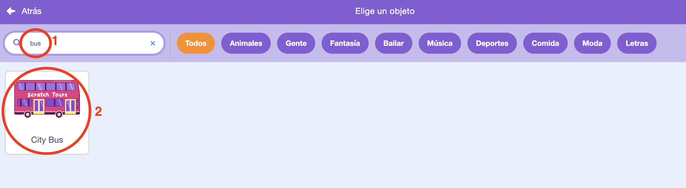
Dale a tu autobús una posición de partida
Asegúrate de que el objeto City Bus (Autobús) esté seleccionado en la lista de objetos debajo del escenario.
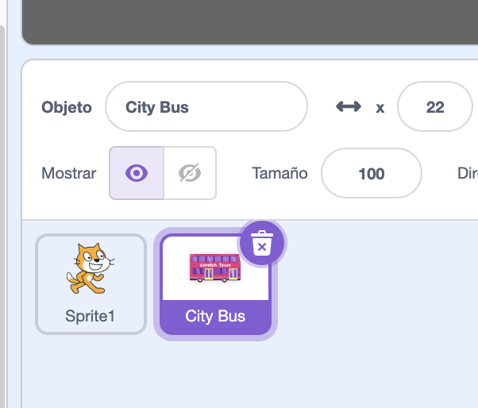
Arrastra un bloque al hacer clic en ⚑ desde el menú eventos hacia el área de Código.
Arrastra el autobús a una buena posición en el escenario:
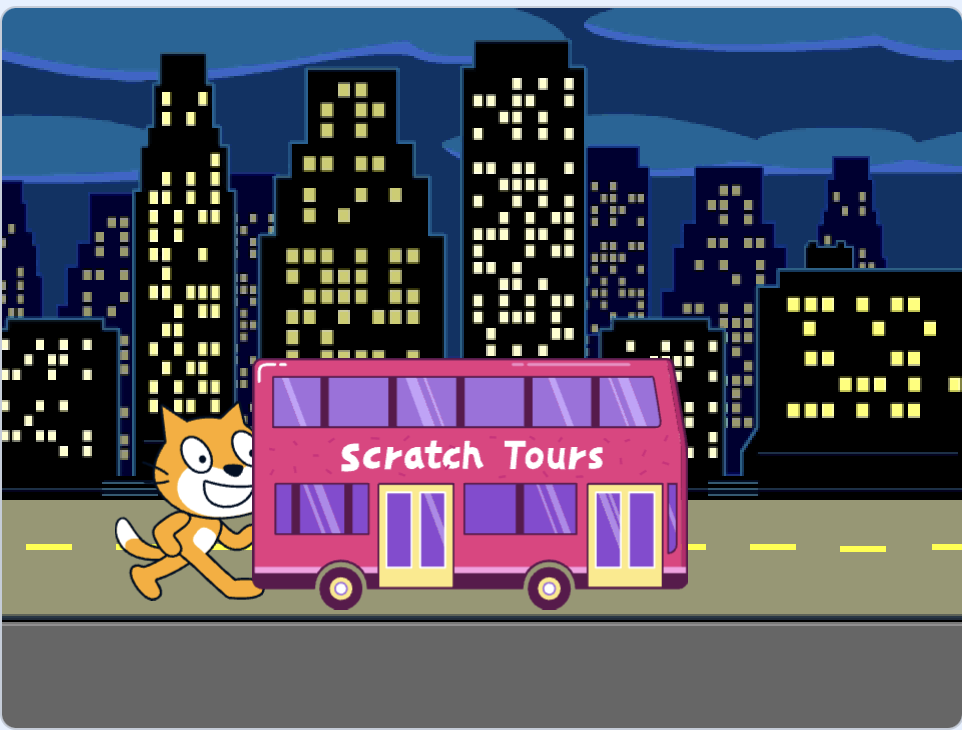
Las coordenadas (números utilizados para describir la posición x e y) del autobús se muestran en el panel Objetos debajo del escenario:
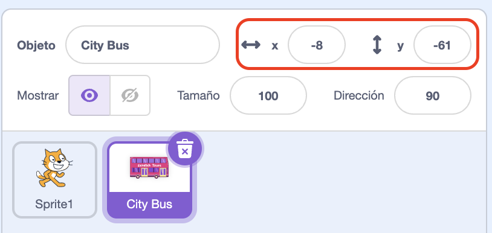
Agrega un bloque ir a x: y: . Lo puedes encontrar en la categoría Movimiento:
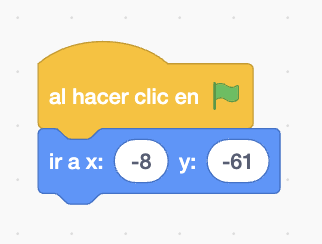
Si te fijas, los valores de x e y son los mismos que aparecían en el autobús. Scratch siempre te propone como coordenadas las que tenga el objeto en el momento de añadir el bloque ir a x: y: . Tus coordenadas serán algo diferentes de las mías, pero no importa siempre que el autobús esté situado donde tú quieras.
Prueba: arrastra el bus a cualquier lugar del escenario y luego haz clic en la bandera verde ⚑. El bus debería regresar siempre a su posición inicial.
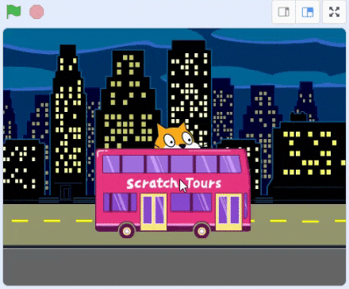
Mueve el autobús detrás de los objetos de los personajes
Para asegurarte de que el objeto City Bus (autobús) esté siempre detrás de todos los objetos de personajes, agrega un bloque ir a capa delantera, que puedes encontrar en la categoría Apariencia. Luego haz clic en la flecha y cambia la palabra "delantera" por "trasera":
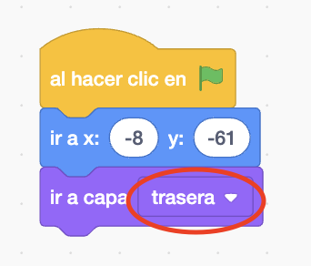
Ahora el bus se colocará por detrás del gato cuando pulses en la bandera verde:
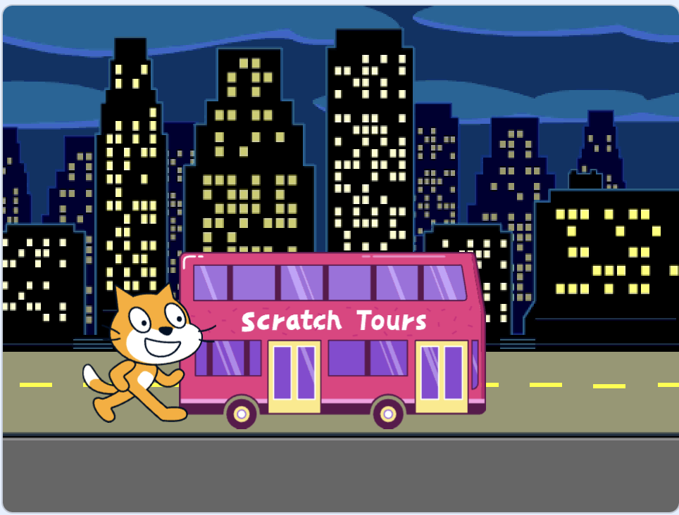
Cambia el color del bus
Añade un bloque para cambiar el color del autobús. Puedes usar el color que tú quieras. Recuerda que puedes usar cualquier número entre 1 y 200:
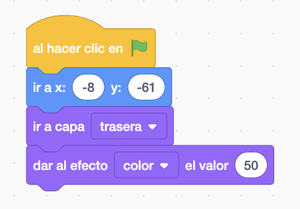
2. El gato de Scratch toma el autobús
Animarás el gato de Scratch para que aparezca en el lado derecho del escenario y camine hacia el autobús. Para conseguir el efecto de que el gato camina, vamos a hacer una animación haciéndole cambiar de disfraz mediante un bucle.
Como siempre, iremos poco a poco para que sigas aprendiendo trucos de Scratch. ¡Manos a la obra!
Colocamos al gato en su posición inicial
Cambia el tamaño del gato
Hasta ahora todo va bien, pero nuestro gato es demasiado grande como para subirse en ese autobús. Vas a aprender a cambiar el tamaño de los objetos en Scratch, haciendo que el gato se vuelva más pequeño.
Para esto, tienes que seleccionar el objeto del gato (Sprite1) (1) y, después, cambiar su tamaño escribiendo el porcentaje que quieras en el campo Tamaño (2). En este caso, vamos a dejar al gato a la mitad de su tamaño original, así que pondremos un tamaño del 50 %:
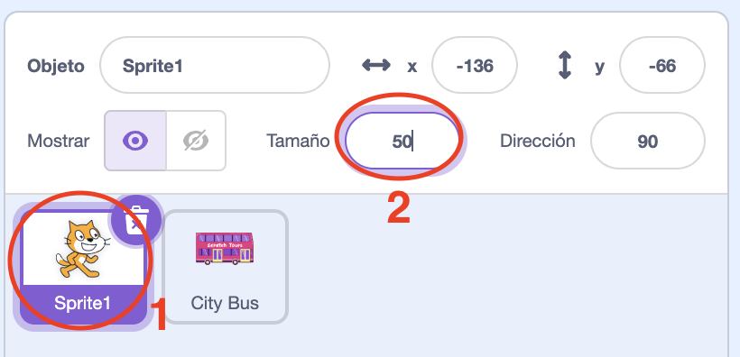
Coloca al gato en posición
Queremos que el gato empiece en la parte derecha de la pantalla. Para que mire hacia el autobús, tendremos que hacer que mire hacia la izquierda. Eso lo podemos hacer con el campo que pone "Dirección" en la zona de propiedades del objeto:
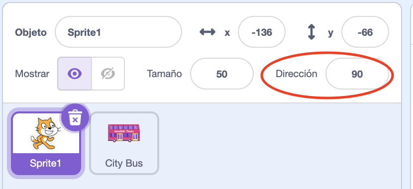
Al pulsar en el campo, aparece un control que te ayuda a apuntar al objeto hacia donde tú quieras arrastrando la flecha:
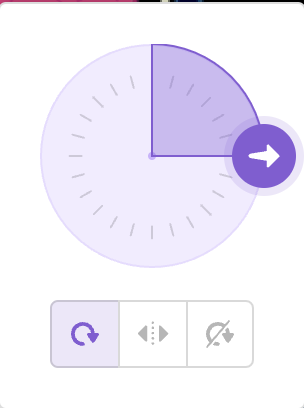
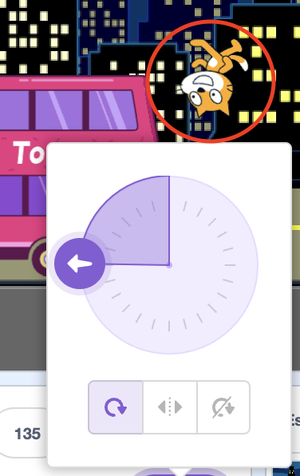
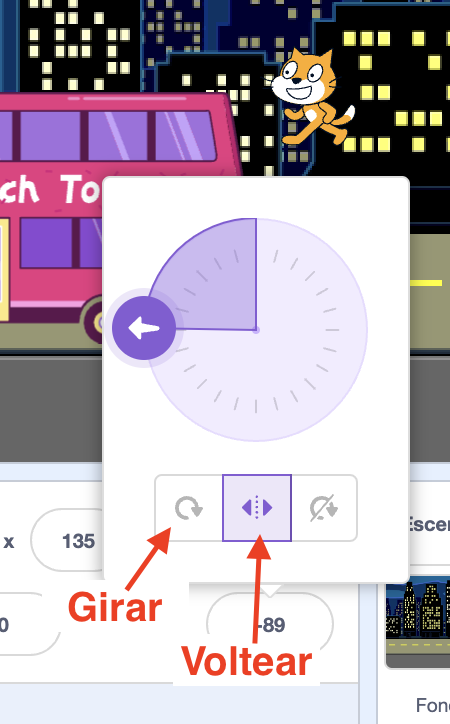
Arrastra el gato a la esquina inferior derecha de la pantalla. Tendría que quedarte algo así:
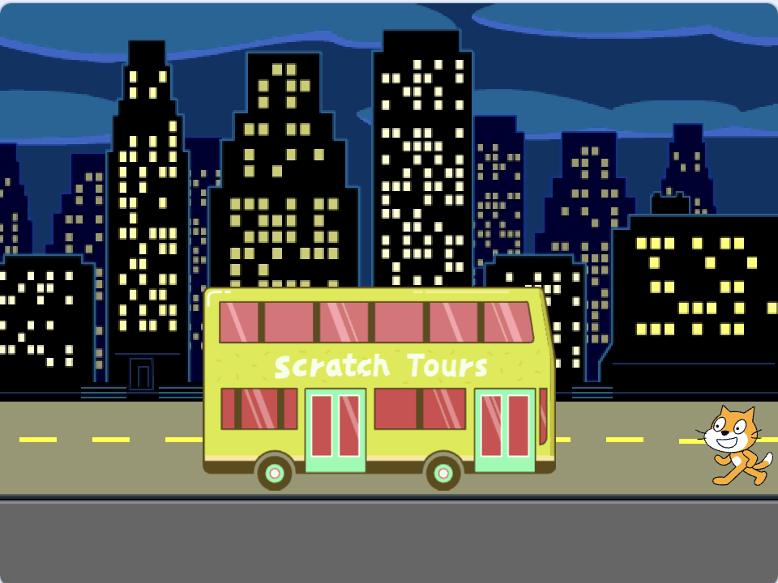
Añade el código para que el gato se coloque solo
Como el gato va a moverse por la pantalla, puede acabar en cualquier otra posición. Tenemos que asegurarnos de que el gato empieza en su posición inicial cada vez que pulsemos la bandera verde. Para eso, solo tenemos que usar el bloque ir a x: y: en el objeto gato y colocarlo en un evento al hacer clic en ⚑. ¡Recuerda que los valores de x e y ya te los pone Scratch automáticamente por haber puesto tú el gato en la posición que quieres! Aunque tus valores serán seguramente algo diferentes de los míos, no te preocupes.
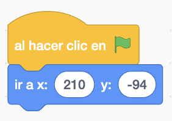
Prueba: mueve el gato a cualquier lugar de la pantalla y comprueba que, al pulsar la bandera verde, vuelve él solo a su posición inicial.
Vamos a mover al gato
Ha llegado el momento de programar al gato para que pille el autobús. Para mover objetos por la pantalla mediante código tenemos el bloque mover 10 pasos en la categoría Movimiento.
| Problema: para que el gato llegue desde su posición hasta la puerta delantera del autobús, debería avanzar unos 140 píxeles. Podrías intentar utilizar directamente un bloque mover 140 pasos, pero esto no funciona del todo bien. Si haces la prueba, verás que el gato se mueve tan rápido, que ni se ve. Es como si se "teletransportara" de golpe al autobús. Para simular que va moviéndose poco a poco, tenemos que hacer precisamente eso, moverlo poco a poco, es decir, usando varios bloques de mover 10 pasos para que vaya "paso a paso". |
Para avanzar 140 pasos de 10 en 10 tendríamos que colocar 14 bloques de mover 10 pasos seguidos. A veces, al programar, tenemos que hacer eso de repetir muchas veces lo mismo. Para hacernos la tarea más fácil tenemos una herramienta muy potente que son los bucles repetir.
Estos bucles los puedes encontrar en la categoría Control. Verás que tienen una forma especial que permite meterles dentro otros bloques. Todo lo que metas en el bucle se repetirá el número de veces que le pongas. Para avanzar 140 pasos avanzando 10 pasos cada vez, tenemos que repetir el bucle 14 veces. Pero también podemos avanzar 5 pasos cada vez y repetirlo 28 veces, y habremos recorrido la misma distancia. En ambos casos conseguimos llegar al mismo sitio, pero mientras más repeticiones hagamos, más "suave" parecerá el movimiento.
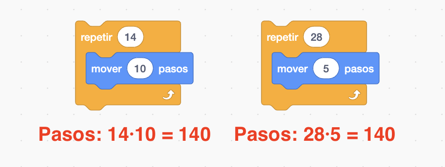
Es posible que tu gato no llegue a la puerta con 140 pasos exactamente sino que necesite más o menos. Experimenta con diferentes valores de pasos y de número de repeticiones hasta que veas que el gato se mueve como tú quieras y que llega justo a la puerta del bus.
No te preocupes si crees que se mueve demasiado rápido. Eso tiene fácil arreglo y ya aprenderás a regular la velocidad (a lo mejor, lo descubres por tus propios medios, ¡prueba sin miedo!)
¡Anímate, gato!
Ya hemos conseguido que el gato se mueva, pero parece que va "flotando" por la calle. Estaría mejor que diera la sensación de ir caminando y para eso tenemos que animarlo fotograma a fotograma. Scratch ya ha pensado en eso y el gato trae incorporados dos disfraces con las patas colocadas de forma diferente. Simplemente cambiando de uno a otro disfraz ya conseguiremos una sensación de movimiento.
Para cambiar los disfraces de un objeto tenemos algunos bloques en la categoría Apariencia. En este caso, como siempre vamos a cambiar de un disfraz a otro, utilizaremos el bloque siguiente disfraz. Metiendo el bloque dentro del bucle repetir, conseguimos que se cambie de disfraz cada vez que avance. Tu código debería quedar así:
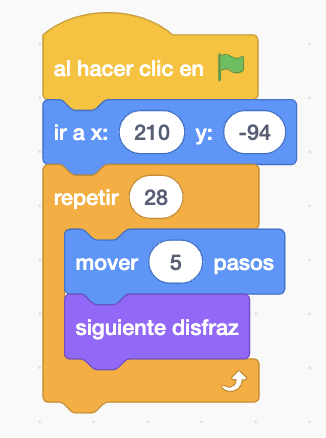
Y ahora, a entrar en el autobús
Ya solo nos queda que el gato se "suba" al autobús. Para hacerlo, vamos a hacer que el gato "desaparezca" al llegar a la puerta del bus. Tienes un bloque que te permite esconder los objetos, lo puedes encontrar en la categoría Apariencia. Añádelo al final de tu código para que el gato no "desaparezca" hasta llegar al autobús.
Cuando pruebes tu código verás que tu gato ha desaparecido. ¿Dónde está? ¿Cómo hacemos que vuelva? No te preocupes, habrás visto que junto al bloque esconder hay un bloque mostrar. Si lo colocamos al principio del todo, cada vez que pulsemos la bandera verde volverá a aparecer nuestro gato.
Tu código debería ser parecido a este:
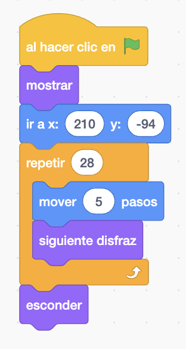
Pruébalo y modifícalo si hace falta hasta que quede como a ti te guste.
3. El hipopótamo vuela hacia el autobús
En Scratch puede ocurrir cualquier cosa. ¡Hasta puede que los hipopótamos vuelen!
Primero añade un objeto Hippo1, que puedes encontrar en la categoría Fantasía.
Vamos a hacer que el hipopótamo coja el autobús, pero irá volando en vez de andando. ¡Manos a la obra!
Dale al hipopótamo una posición inicial
Agrega el objeto Hippo1 a tu proyecto y cámbiale el tamaño a 50.
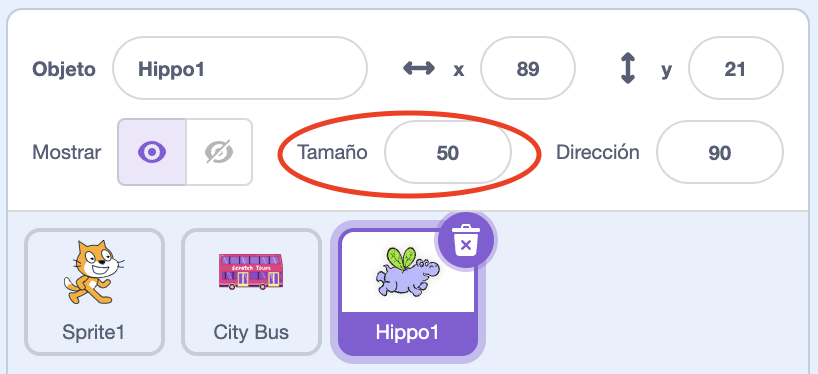
Ahora arrastra el hipopótamo a la esquina superior izquierda de la pantalla y agrega el código para que siempre se coloque ahí al pulsar la bandera verde (comprueba que estás agregando el código al objeto Hippo1, no al gato o al bus).
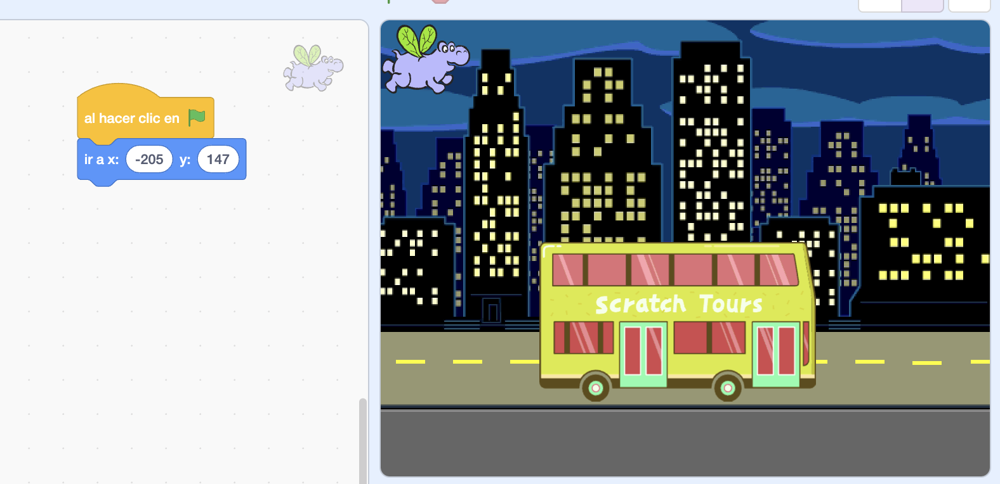
Haz volar al hipopótamo
El hipopótamo tiene que ir volando desde su posición inicial hasta la puerta del autobús. Ya sabes cómo animar un objeto en Scratch y cómo hacer que se mueva a la vez, porque acabas de hacerlo en el gato. Aquí vas a repetir lo mismo, pero ahora el hipopótamo no puede moverse en horizontal sino que tendrá que ir hacia la derecha y también hacia abajo.
La manera más fácil de hacer que se mueva hacia donde queremos es utilizar el bloque apuntar hacia puntero del ratón, que está en la categoría Movimiento, cambiando puntero del ratón por City Bus (el objeto del autobús). Así, cuando usemos el bloque mover 10 pasos, el hipopótamo irá bajando hasta el autobús.
Añade el código con el bucle repetir y ve probando con el tamaño de los pasos del bloque mover y con el número de repeticiones del bucle hasta que veas que el hipopótamo llega hasta tu autobús. ¡Acuérdate de incluir el bloque de cambio de disfraz para que el hipopótamo mueva sus alas! Te dejo mi código comentado como guía pero, como siempre, tu código puede ser algo diferente.
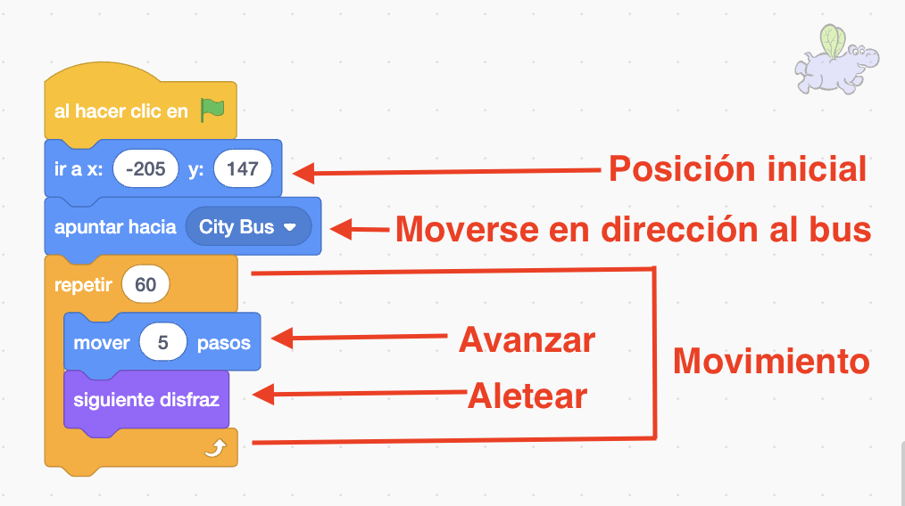
Muestra y oculta el hipopótamo
| Te falta esconder el hipopótamo al llegar al bus, como hiciste antes con el gato, para que parezca que se mete dentro. ¡Recuerda añadir también un bloque al principio de tu código para volver a mostrar el hipopótamo al inicio de tu programa! A estas alturas ya deberías ser capaz de hacerlo sin ayuda. ¡A ver si es verdad! |
4. El autobús se va
Ahora vas a hacer que el autobús se ponga en marcha y se vaya por la derecha de la pantalla. ¡Asegúrate de no dejarte a los pasajeros en tierra!
Primero, asegúrate de tener seleccionado el objeto City Bus (autobús). Así te aseguras de estar programando el autobús y no el gato o el hipopótamo.
Espera a los pasajeros
El autobús va a moverse, pero tiene que esperar primero a que suban los pasajeros. Por eso vamos a poner un bloque esperar 1 segundos, que está en la categoría Control. Tendrás que poner un valor que permita que tus pasajeros suban. Yo voy a utilizar 3 segundos, aunque puede que tú tengas que esperar más si tus personajes van más lentos. Recuerda que puedes poner incluso valores con decimales, pero usa el punto para separarlos, no la coma.
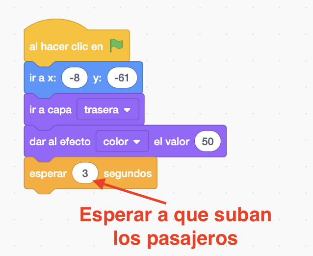
El autobús se pone en marcha
Ahora que están todos a bordo, el autobús debe irse por la derecha de la pantalla. Lo primero que tienes que hacer es colocarlo lo más a la derecha que puedas, casi fuera de la pantalla, pero, ¡cuidado! Si te pasas, el autobús volverá a aparecer en su posición inicial y tendrás que volver a moverlo y dejarlo un poco menos fuera. Debería quedarte algo así:
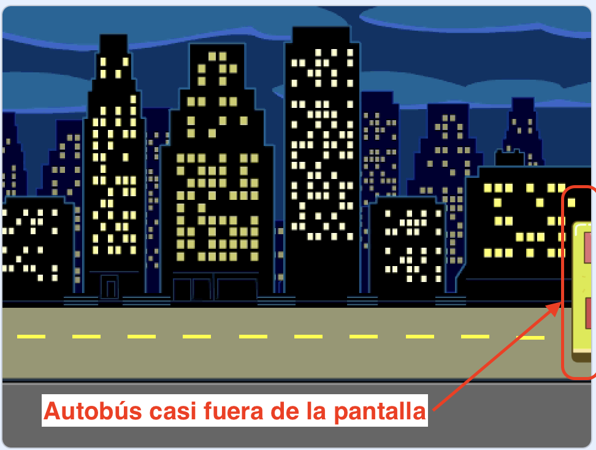
Ahora que el bus está donde queremos, ya aparecerán las coordenadas x e y necesarias en los bloques de movimiento. Es el momento de añadir bloques para moverse. Esta vez va a ser muy sencillo, puesto que no hace falta animar el autobús mientras se mueve. Nos da igual que parezca ir "flotando". En estos casos, no es necesario usar el bucle de repetición con el bloque mover, porque hay un bloque que sirve precisamente para deslizar un objeto por la pantalla de forma suave. Es el bloque deslizar en 1 segundos a x: y:, que puedes encontrar en la categoría de Movimiento.
Prueba a variar el tiempo que tarda en deslizar el autobús para tener diferentes velocidades hasta que quede a tu gusto.
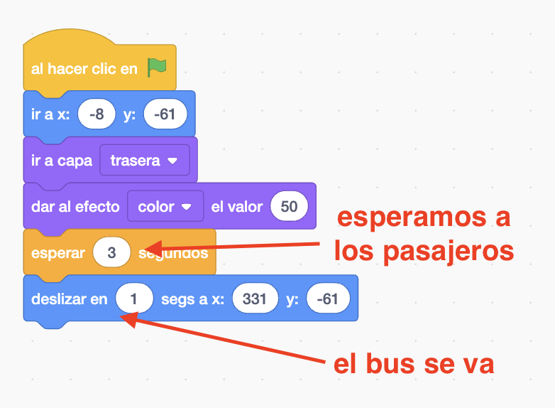
| ATENCIÓN: es posible que ahora tu hipopótamo no vuele bien hasta el autobús en el centro de la pantalla. Esto es porque, cuando se ejecuta el bloque apuntar hacia City Bus, el autobús todavía no ha regresado a su posición inicial. Para arreglar eso, puedes hacer que el hipopótamo espere una fracción de segundo antes de apuntar al bus, para que este tenga tiempo de colocarse en su sitio. Simplemente agregando un bloque esperar 0.1 segundos al principio del código de Hippo1, problema solucionado. |
El autobús se va definitivamente
Para que parezca que el autobús se ha ido completamente (y no que se ha parado en el extremo de la pantalla), solo tienes que agregar un esconder al final del código de City Bus.
¿Te acuerdas de qué había que hacer para que el autobús se mostrara de nuevo al empezar el proyecto? Añade el bloque necesario al principio y ya lo tienes.
Prueba: al pulsar la bandera verde deberían aparecer el bus y los pasajeros en sus posiciones iniciales. Los pasajeros deben coger el bus y, por último, el bus debe irse por la derecha de la pantalla. Si todo va bien, ¡enhorabuena! Si algo falla, intenta arreglarlo por tus propios medios antes de pedir ayuda.
5. Perder el autobús
¿Qué pasaría si el gato caminara más despacio y no le diera tiempo a coger el bus? ¿Podemos modificar el proyecto para que pase eso?
Vas a aprender cómo controlar la velocidad a la que anda un personaje por la pantalla. Esto te puede resultar útil en cualquier proyecto en el que tengas personajes que se muevan a distintas velocidades.
No te preocupes por el gato. ¡Al final, serás tú quien decida si pierde o no el autobús!
Andando más despacio
Asegúrate de tener seleccionado al gato (objeto Sprite1). Para que el gato se mueva más despacio, no tienes más que añadir un bloque esperar 1 segundos dentro del bucle de repetición. Así, tras cada "paso", se detendrá un instante.
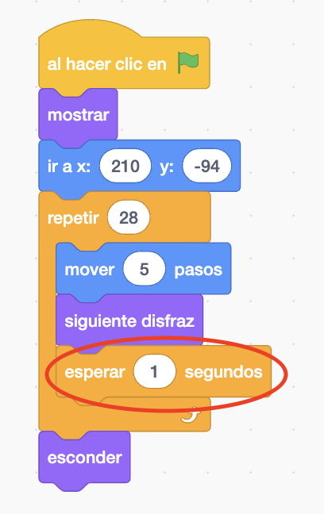
Atención: para que parezca que el gato pierde el bus, tendrás que quitar el último bloque esconder. Así el gato se quedará en el centro de la pantalla esperando al siguiente (¡qué remedio!)
Si dejas el valor de 1 segundo que trae el bloque, verás que el gato va muuuuuy despacio. Tendrás que cambiar la espera y usar fracciones de segundo (por ejemplo, 0.25, 0.15, 0.1, etc). Recuerda que tienes que usar el punto (.) y no la coma (,) para separar los decimales en Scratch. Prueba con diferentes valores hasta que el gato pierda por poco el autobús.
Elige si el gato toma o pierde el autobús
Tú eliges si quieres que el gato tome o pierda el bus. Recuerda:
- Si quieres que pierda el bus, haz que lo pierda por poco y recuerda quitar el bloque esconder para que se quede esperando al siguiente y no "desaparezca".
- Si quieres que tome el bus, pon una espera suficientemente corta como para que le de tiempo a llegar y esconderse antes de que salga el autobús (truco: si tienes problemas para conseguirlo, recuerda que puedes hacer que el autobús espere un poco más. ¡En Scratch, tú mandas!)
6. Cambia el destino
El autobús tiene escrito “Scratch Tours”, pero puedes cambiar el destino a uno de tu elección. ¿A dónde quieres que vaya tu autobús?
Vas a modificar el autobús para que ponga lo que tú quieras en su lateral. Así aprenderás a incluir texto en tus objetos.
Edita el objeto City Bus
Selecciona el objeto City Bus (autobús) y haz clic en la pestaña Disfraces:
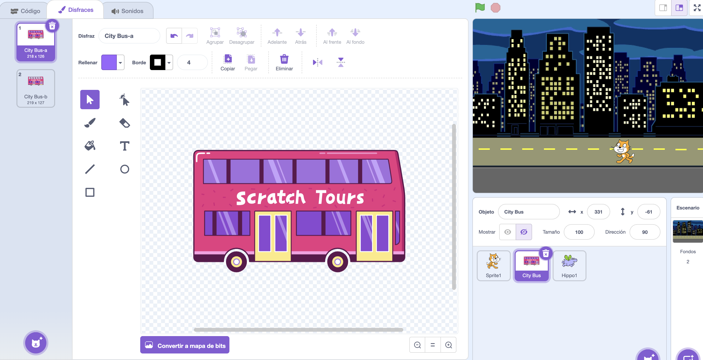
Haz clic en el texto blanco “Scratch Tours” para seleccionarlo (1) y luego haz clic en Eliminar para quitarlo (2).
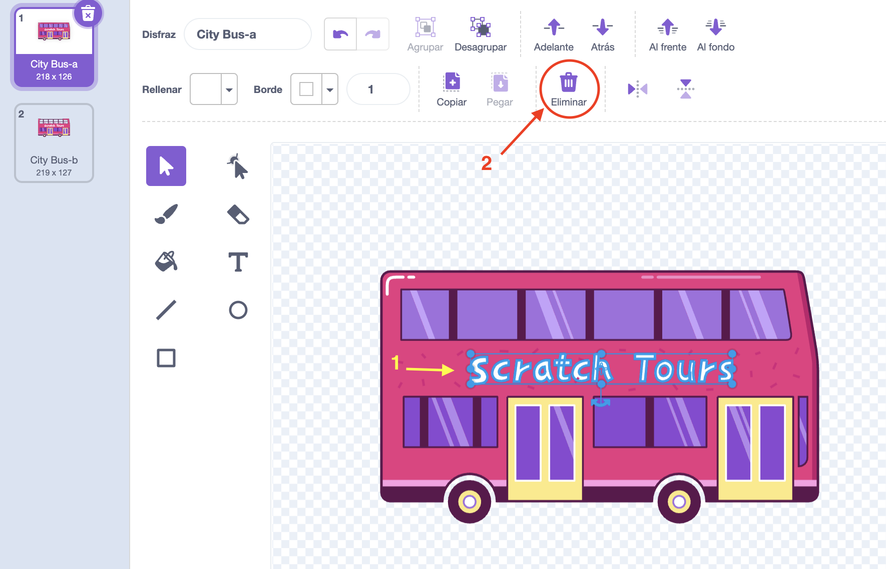
Consejo: puedes usar el icono Eliminar en el editor de dibujo o pulsar la tecla Supr en tu teclado.
Selecciona la herramienta Texto (Escritura) (1). Haz clic en el autobús donde quieres que comience el texto y escribe el destino de tu elección.
Para cambiar la fuente (estilo de escritura), puedes hacer clic en el menú desplegable (2):
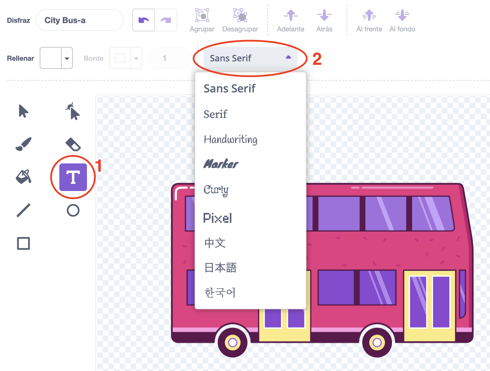
Escribe el destino que quieras para tu autobús y usa el tipo de letra que más te guste.
Para centrar bien el cartel en el lateral del autobús, haz clic en la herramienta de seleccionar (1) y arrastra el texto hasta colocarlo donde tú quieras (2).
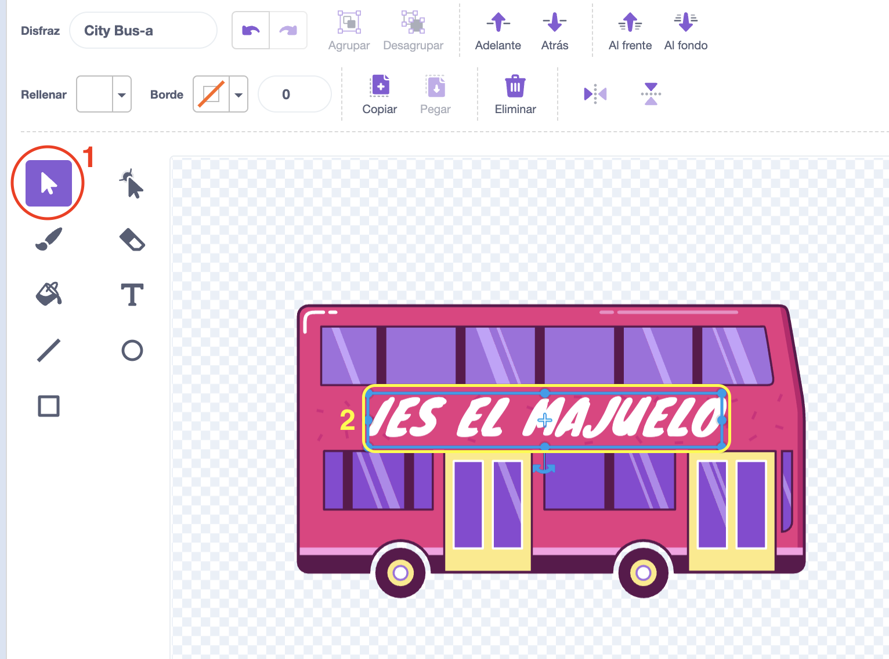
Examen rápido
Contesta las siguientes tres preguntas para reflexionar sobre lo que has aprendido. Hay pistas para guiarte hacia la respuesta correcta. Selecciona las respuestas correctas y haz clic en "responder".

TAREA FINAL - Mejora tu proyecto
Ahora debes agregar otros objetos de tu elección a tu animación. Necesitarás agregar código para que tus objetos puedan ir a su posición inicial, apuntar hacia la dirección correcta, y luego usar los bloques repetir, mover y siguiente disfraz para tomar el autobús.
Consejo: Cuando haces clic en Elegir un objeto, puedes mantener el cursor del ratón sobre el objeto para ver sus disfraces. Mirar los disfraces de los objetos puede ayudarte a encontrar un objeto que funcione bien para la animación.
Puedes usar cualquiera de los bloques que has utilizado en este proyecto, así como otros que ya conozcas.
Agrega efectos de sonido al autobús o a otros objetos, o cambia el efecto de color del bus. Uno de los objetos podría perder el autobús y no esconderse. ¡Usa tu creatividad!
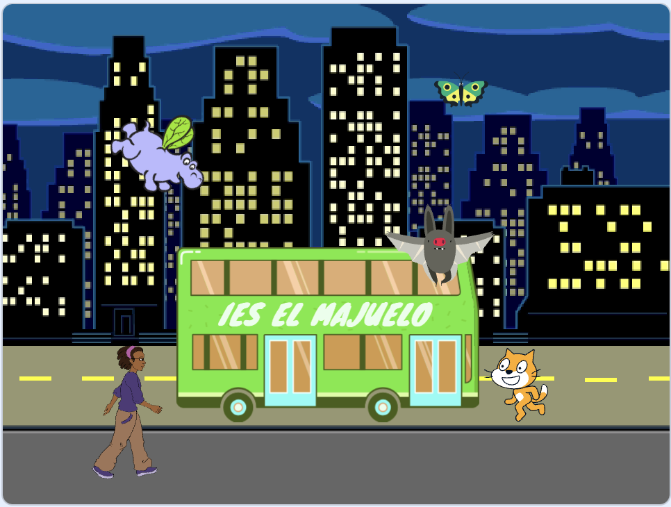
Cuando tengas un resultado que te guste, acuérdate de compartir tu proyecto y entregar el enlace en la tarea de Google Classroom.